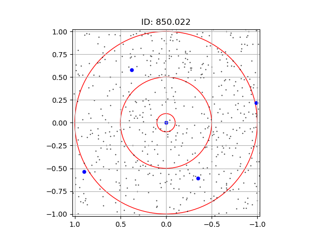
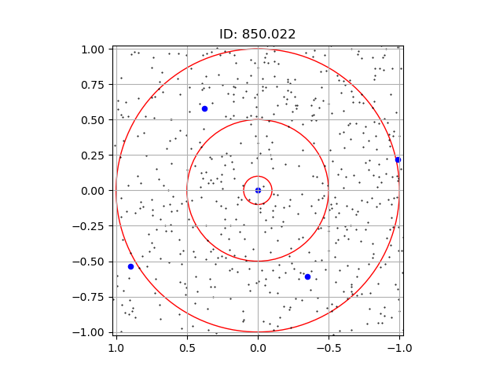

Apéndice A: Mapas de SMGs con radios en distancias angulares (arcsecxarcsec)


Identificación de sobredensidades de galaxias ópticas
alrededor de galaxias submilimétricas en el campo
Extended Groth Strip
Tesis presentada al
Colegio de Física
como requisito parcial para la obtención del grado de
Licenciado en Física
por
Kevin Salazar Flores
Asesorado por:
Dra. Itziar Aretxaga Mendez (INAOE)
Dra. Ana Aurelia Avilez López (BUAP)


 



Las tablas completas del Apéndice C se pueden consultar en el siguiente PDF de la tesis versión digital